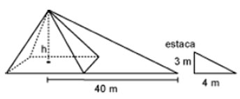

1. Un autobús salió de la terminal a las 7:30 a.m. y llegó a su destino a las 18:00 p.m. del mismo día. Si se desplazó a una velocidad constante de 95 km/h, ¿cuántos kilómetros recorrió en total?
- A. 978.5
- B. 997.5
- C. 1016.5
- D. 1045.0
Una razón (o razón geométrica) es una comparación entre dos números mediante la operación de división. Las razones nos dicen cuántas veces es más grande o pequeña una cantidad de otra. Por ejemplo: Si Juan tiene 16 años y su padre tiene 48 años, puede hacerse el comparativo de ambas edades con una razón.
Significa que la edad de Juan es la tercera parte que la de su padre
Significa que la edad del padre de Juan es tres veces mayor que la de Juan
A la igualdad entre dos razones se le llama proporción. La igualdad entre cualquier par de fracciones equivalentes forma una proporción.
Por ejemplo: \frac{3}{4} = \frac{6}{8}
En una proporción, el valor de ambas fracciones es el mismo.
También el producto cruzado (numerador de una fracción por el denominador de la otra) es siempre igual.
(3)(8)=24
(4)(6)=24
Ésta propiedad se emplea en la solución de problemas en los que se conocen 3 de los 4 números que forman las fracciones. El procedimiento para el cálculo de la incógnita se conoce como “Regla de 3”.
Ejemplo: ¿Cuál es el valor de x en la siguiente proporción? \frac{5}{x} = \frac{15}{18}
Solución: Como el producto cruzado debe ser igual, se despeja la incógnita:
(15)(x) = (5)(18)
x=\frac{(5)(18)}{(15)}
por lo tanto, x=6
Sustituyendo x=6 en la proporción original se comprueba la igualdad.
Guía de Evaluación al ingreso de la Educación Superior Tecnológica 2004
314 palabras
1. Un autobús salió de la terminal a las 7:30 a.m. y llegó a su destino a las 18:00 p.m. del mismo día. Si se desplazó a una velocidad constante de 95 km/h, ¿cuántos kilómetros recorrió en total?
2.
Un naturalista realiza un estudio sobre cuatro especies de pinzones en una isla. Sus resultados para las cantidades de cada población son los siguientes:
3. Un vendedor de helados gana $9.00 por cada 5 helados que vende. ¿Cuántos helados necesita vender para obtener una ganancia de $144.00?
4. En el grupo de Juan se aplicó un examen de Historia; el examen con el número mayor de aciertos fue de 43 con calificación 10; y el menor, de 22 con calificación de 5. ¿Cuántos aciertos tuvo Juan para obtener una calificación de 8?
5. Juan tiene 15 vacas, Pedro 20 y Luis 60; deciden venderlas juntas para repartir las ganancias. Determine las relaciones que guarden sus ganancias.
6. Un auto compacto usa gasolina que cuesta $1.25 por litro, cada litro da un rendimiento de 9 kilómetros. Para un recorrido de 99 kilómetros, ¿cuánto dinero se debe invertir en gasolina?
7. Carlos y José son vendedores de una tienda de libros. En la siguiente tabla se muestra el sueldo que obtiene cada uno de ellos dependiendo del número de libros que vendan. Para este periodo de pago cada uno debe obtener un sueldo de $600.00. ¿Cuántos libros debe vender Carlos (C) y cuántos José (J) para que obtengan el sueldo deseado?
| Libros vendidos | Sueldo ($) Carlos | Sueldo ($) José |
| 0 | 50.00 | 0.00 |
| 1 | 60.00 | 20.00 |
| 2 | 70.00 | 40.00 |
| 3 | 80.00 | 60.00 |
| 4 | 90.00 | 80.00 |
| 5 | 100.00 | 100.00 |
8. Un profesor de matemáticas envió a sus alumnos, como práctica de campo, a medir la altura de una pirámide en las ruinas cercanas a su localidad. Los estudiantes colocaron una estaca de 3 metros de altura como se muestra en la figura y midieron las sombras que proyectaban la estaca y la pirámide, que resultaron ser de 4 m y 40 m, respectivamente.  ¿Cuál es la altura (h) de la pirámide en metros?
9. La razón de la votación obtenida por el partido A y el partido B que se ha presentado en las últimas cuatro elecciones fue de 3 a 5, respectivamente. Si en las elecciones pasadas, el partido B obtuvo 3200 votos, ¿cuál fue la votación que obtuvo el partido A?